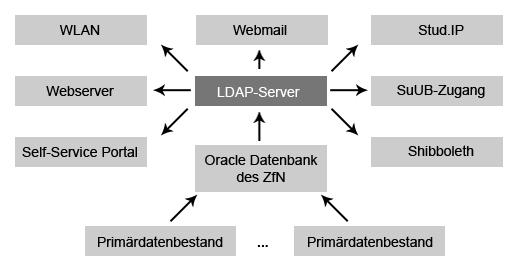
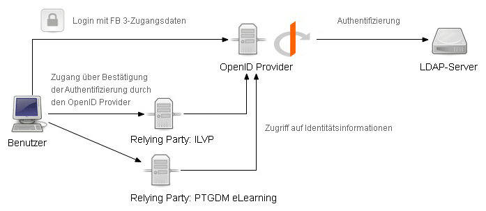
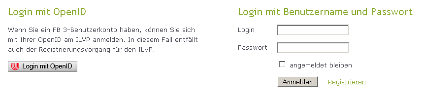
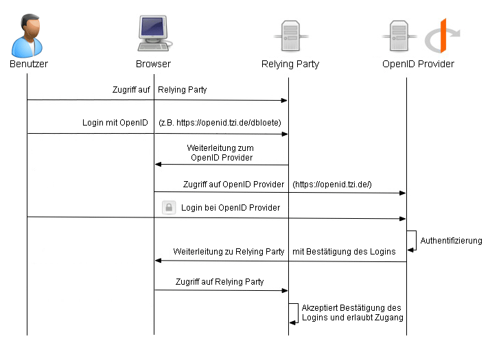

IdM im akademischen Umfeld
Entwicklung und Evaluation eines Pilotsystems mit OpenID
Dennis Blöte
RN-Kolloquium, 11. Juli 2008
IdentManagement-System des ZfN
- Zusammenführen von Daten aus verschiedenen Quellen
- » Studenten- und Telefondatenbank, externe Dozenten, Alumni
- » Aufbau eines LDAP-Servers für ganzheitliche Benutzerverwaltung
- Integration in DFN-AAI mit Shibboleth
- Geplanter Produktivbetrieb: Ende Juni 2009
IdentManagement-System des ZfN

Architektur des Systems

Demo
Identity Provider des Fachbereich 3 und ILVP

Ablauf der Authentifizierung

Integration in eine Relying Party
- Codebeispiel: Referenzimplementierung mit Rails
- » Situated Software
- Libraries und Implementierungen
für viele Programmiersprachen vorhanden
Evaluation
- Abdeckung der Anwendungsfälle
- Usability des Pilotsystems
- Effektivität
- Effizienz
- Zufriedenheit
- Akzeptanz
- Welche Grenzen gibt es?
Ausblick
- Der praktische Teil ist fertig
- Evaluation steht noch aus
- Ende der Arbeit: Anfang August
Danke für die Aufmerksamkeit!
Fragen und Anregungen?